About the Sport
Formula 1 is a global motorsport championship that usually runs from early spring to late autumn, visiting permanent circuits, street tracks, and high-speed venues around the world. The modern grid features 11 teams and 22 drivers, with points awarded to the top 10 finishers in each Grand Prix using the 25-18-15-12-10-8-6-4-2-1 system. Drivers fight for the World Drivers' Championship, while teams combine the points from both cars to contest the Constructors' Championship. Every car must follow strict FIA rules, so success comes from finding performance inside tight limits: better aerodynamics, smarter strategy, stronger reliability, and drivers who can deliver under pressure.
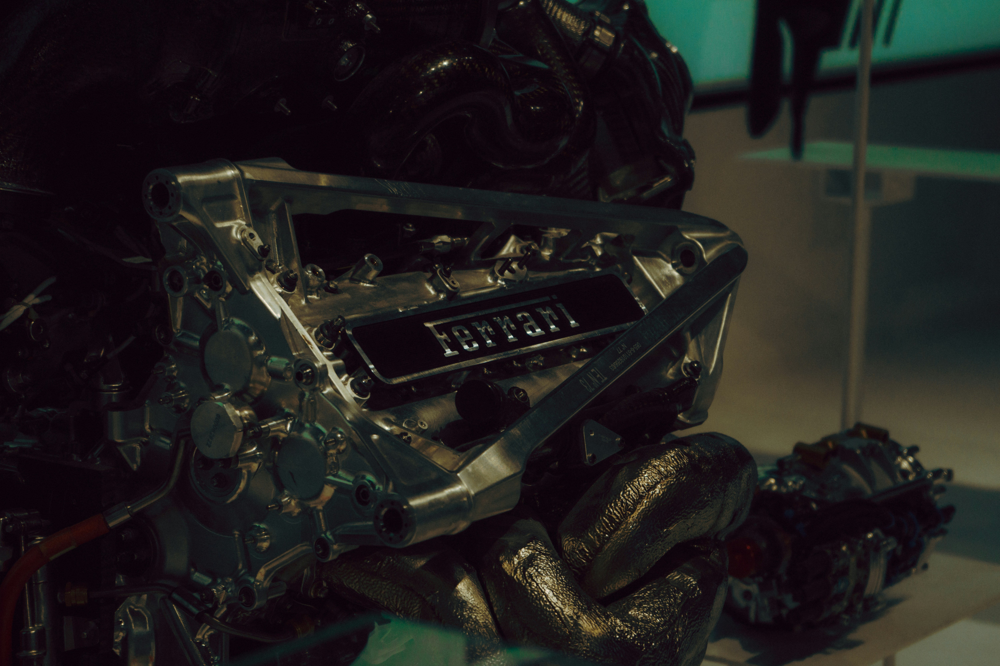
Modern F1 power units use a 1.6-litre turbocharged V6 with hybrid energy recovery, combining speed with remarkable efficiency.
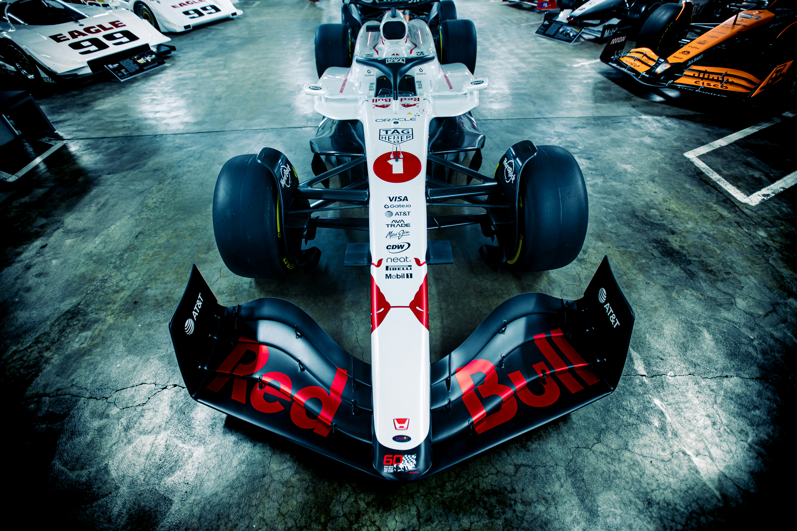
Some hypercars can be faster in a straight line, but F1 cars gain huge time through braking, cornering speed, and downforce.
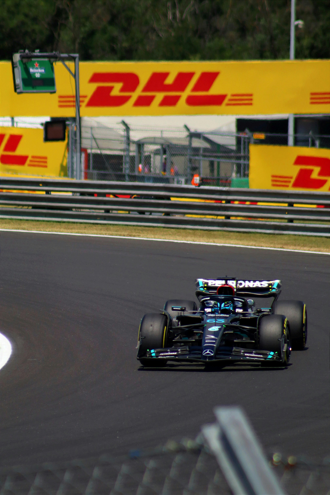
The Mercedes-AMG F1 W11 is remembered as one of the most dominant cars of the hybrid era, combining huge downforce with exceptional stability.
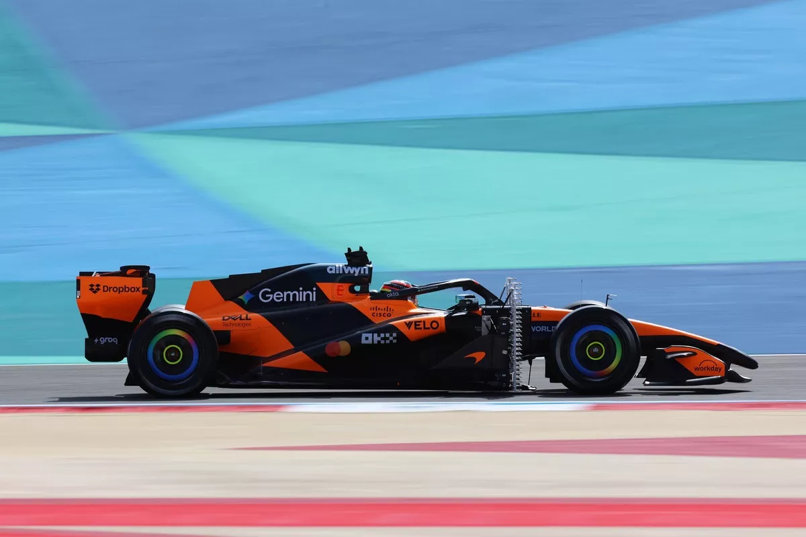
F1 championships can turn on tiny margins: one pit stop, one safety car, one tire choice, or one overtake can change an entire season.
What Makes an F1 Car So Fast
The Engine
An F1 car's power unit is far more than a normal engine. It combines a turbocharged 1.6-litre V6 with hybrid systems that recover energy, store it, and deploy it for extra acceleration. The result is not just raw horsepower, but efficient power delivery across an entire lap. From 2026, Formula 1 places even more emphasis on electrical power and advanced sustainable fuels, making energy management a key part of performance.
Gearboxes
F1 cars use highly refined semi-automatic gearboxes with eight forward gears. Drivers change gear using paddles behind the steering wheel, which allows shifts to happen extremely quickly without taking a hand away from the controls. This matters because every gear change affects acceleration, traction, energy deployment, and engine efficiency. The gearbox is not just a speed tool; it is part of how the driver keeps the car balanced through corners and maximizes every straight.
Aerodynamics
Aerodynamics are the biggest reason F1 cars look and perform so differently from road cars. The front wing guides air around the tires, the floor and diffuser create ground effect, and the rear wing balances stability with drag. Together, these surfaces produce downforce, which pushes the car into the track and gives the tires more grip. That grip lets drivers brake later, carry more speed through corners, and accelerate earlier on exit. F1 is not simply about top speed; it is about keeping the car fast through every phase of the lap.
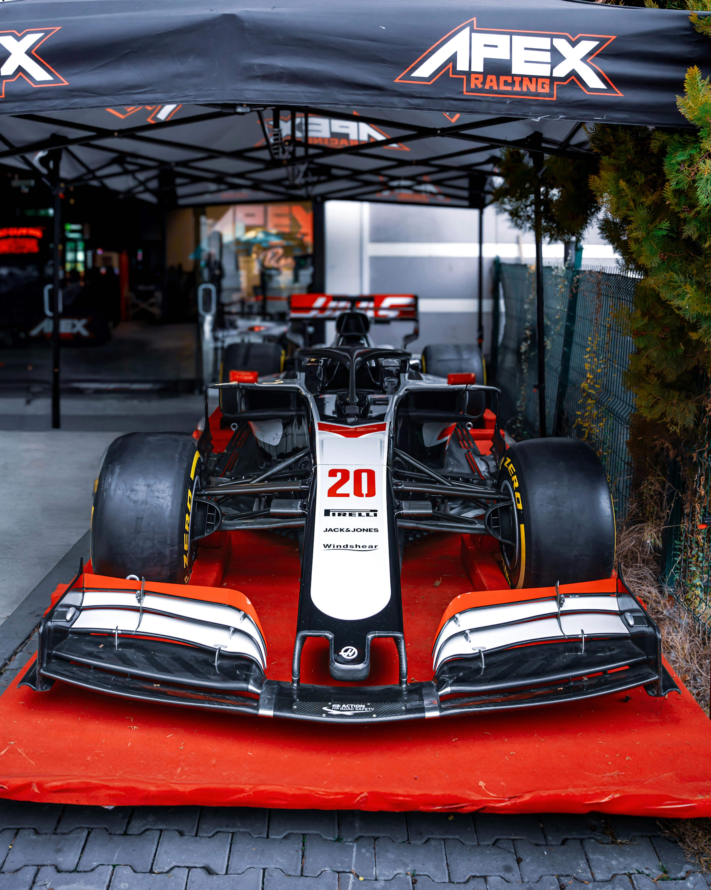
Sports Cars, Supercars, Hypercars, and F1 Cars
Sports cars are designed to mix performance with comfort and everyday usability. They typically feature rear-wheel or all-wheel drive, tuned suspensions, and engines built for more than commuting. Supercars push further toward outright performance, usually with more power, lighter materials, dramatic styling, and sharper handling that demands an experienced driver to fully exploit.
Hypercars sit at the extreme end of road-car engineering, where cost is almost no object. Examples like the Bugatti Chiron, Koenigsegg Jesko, and Rimac Nevera use advanced hybrid or fully electric systems, enormous power figures, and race-inspired aerodynamics to achieve speeds and acceleration that were unimaginable from a road-legal car just a decade ago. Some, like the Mercedes-AMG One, transplant a near-literal F1 power unit into a street car.
What separates a hypercar from everything below it is not just power but the level of engineering integration. Active aerodynamics, torque vectoring, sophisticated traction control, and carbon fibre construction all work together as a system. Driving one at its limit requires serious skill, and many owners never experience the full capability of the car they have purchased.
Formula 1 cars are different because they are built for one job: producing the fastest possible lap under a strict rulebook. They do not need luggage space, comfort, headlights, road tires, or long service intervals. They are light, low, fragile, and completely optimized for circuits. A hypercar might compete in a straight-line top-speed contest, but an F1 car dominates braking zones and high-speed corners because it generates enormous downforce and runs on slick racing tires engineered for one race distance.
That gap between road cars and F1 machinery also highlights how much of motorsport development quietly filters down into production vehicles over time. Hybrid systems, carbon fibre body panels, paddle-shift gearboxes, and advanced brake materials all have roots in racing. In that sense, the hypercar and the F1 car are not opposites — the hypercar is often where yesterday's F1 technology eventually lands.
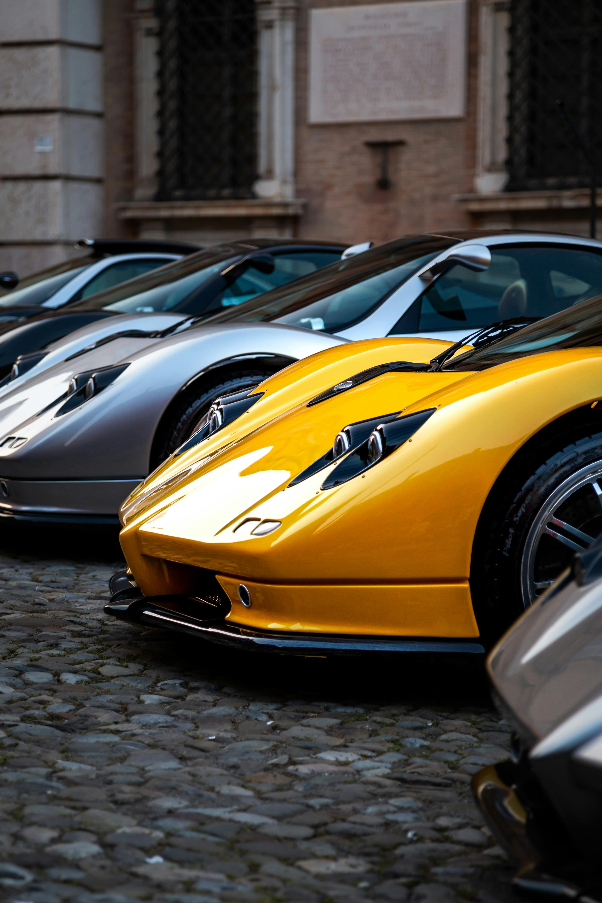
Timeline
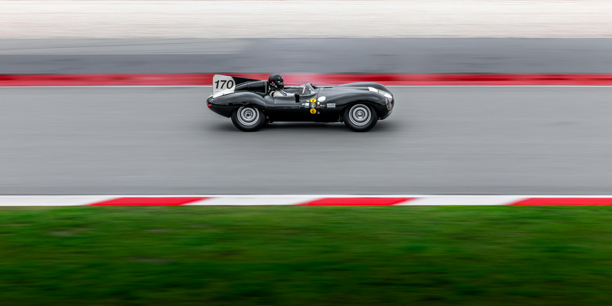
1950s
The Formula 1 World Championship began in 1950, with Silverstone hosting the first championship Grand Prix. Early stars such as Juan Manuel Fangio, Alberto Ascari, and Stirling Moss raced cars with front engines, narrow tires, and limited safety protection. The Constructors' Championship was introduced in 1958, giving teams their own title to fight for alongside the drivers.
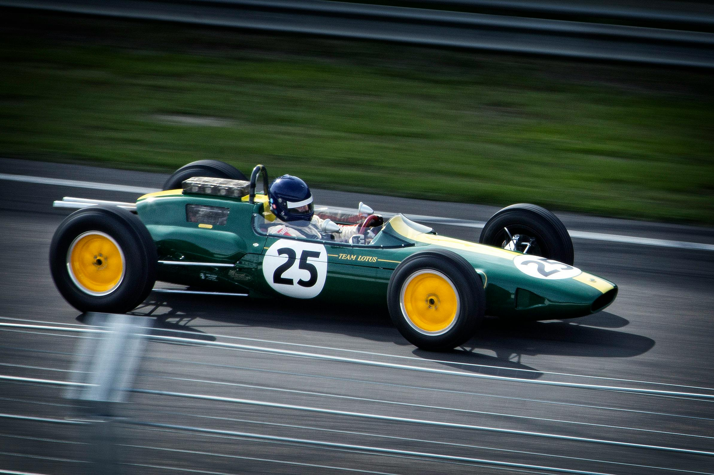
1962
Lotus, led by Colin Chapman, changed how F1 cars were designed. The Lotus 25 introduced a lightweight monocoque chassis in 1962, replacing older space-frame construction and helping Jim Clark dominate. Later in the decade, the Ford-Cosworth DFV became one of F1's most important engines because it was powerful, reliable, and available to multiple teams.
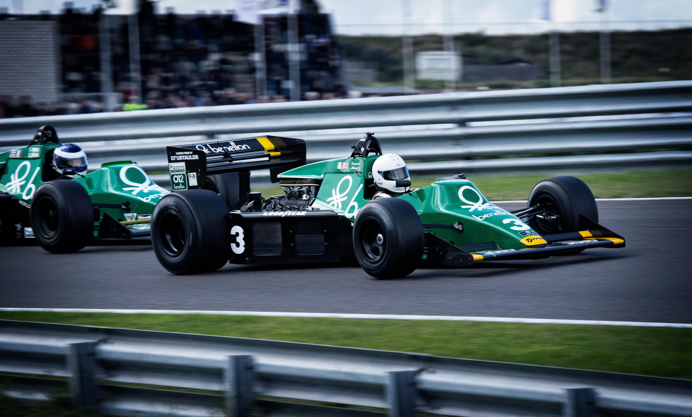
1970s
The 1970s pushed F1 deeper into aerodynamics. Teams experimented with wings, sidepods, and ground effect to make cars grip harder through corners, while rule-makers worked to control safety risks. The decade also shaped the business side of the sport, with team organization, sponsorship, television coverage, and commercial rights becoming increasingly important.
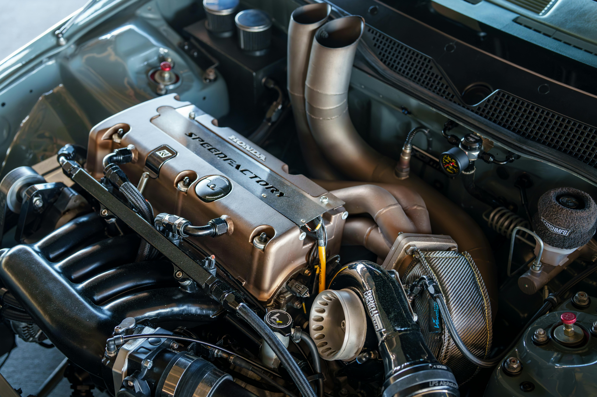
1990s
The 1990s brought advanced electronics, semi-automatic gearboxes, active suspension, and driver aids, before many systems were restricted to put more emphasis back on the driver. The 1994 Imola weekend, when Ayrton Senna and Roland Ratzenberger lost their lives, transformed F1's approach to safety. Stronger cars, better circuits, improved helmets, pit-lane speed limits, and the wooden plank under the car all became part of a safer era.
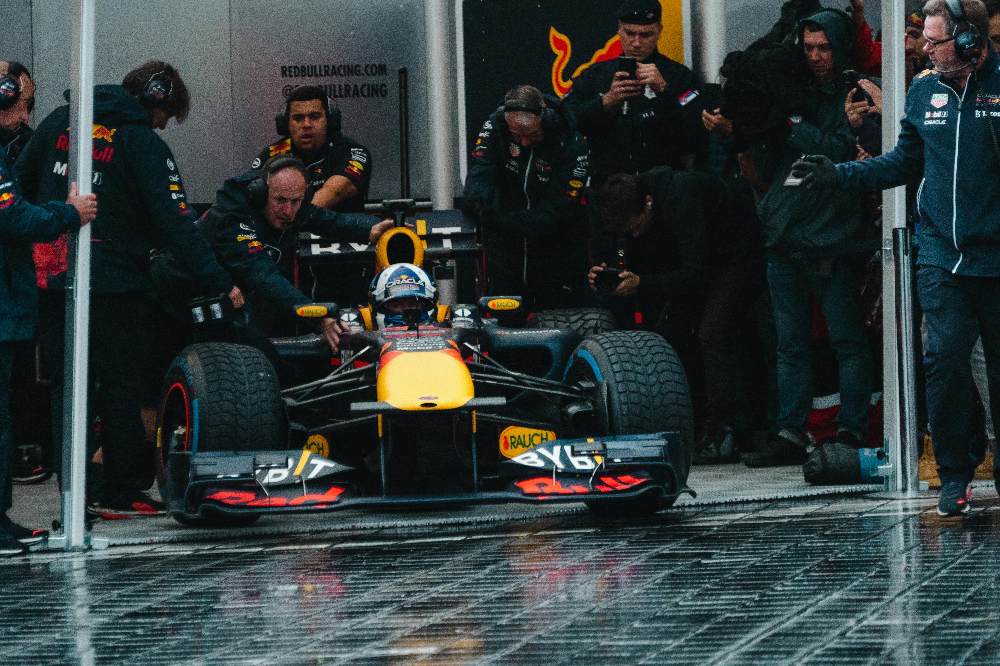
2000s
The 2000s featured Ferrari's Michael Schumacher era, intense tire and fuel strategies, and major changes to qualifying and race formats. In 2009, KERS introduced hybrid energy recovery to F1, while a new aerodynamic rule set helped create a reshuffled grid. Red Bull soon became a dominant force by mastering chassis design and airflow.
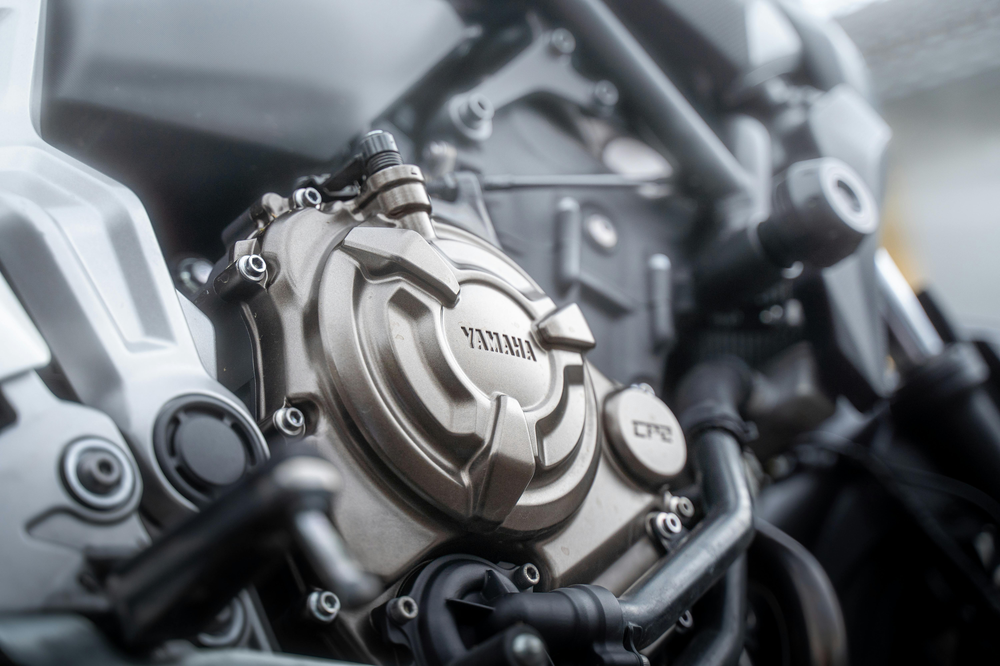
2014-Modern day
In 2014, F1 moved to turbo-hybrid power units, bringing back turbocharging with advanced energy recovery. Mercedes dominated the early hybrid years, Red Bull returned to the top in the ground-effect era, and the sport continued chasing higher efficiency. The 2026 rules increase electrical power, use advanced sustainable fuels, and introduce a new aerodynamic philosophy.
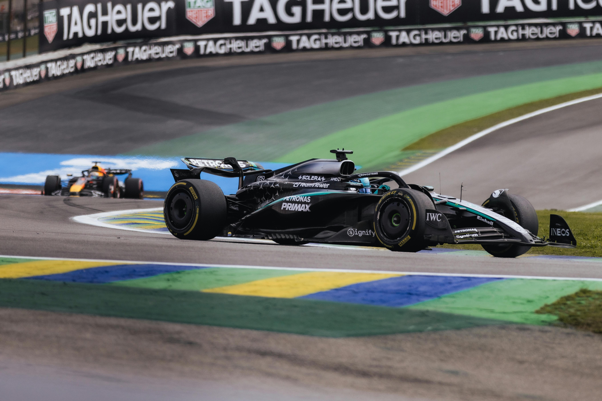
The Future
The future of F1 will balance tradition with innovation. New rules focus on sustainable fuels, more electrical power, lighter cars, active aerodynamics, and closer racing. The challenge is to keep the sport loud, fast, strategic, and exciting while proving that motorsport can still push technology forward.